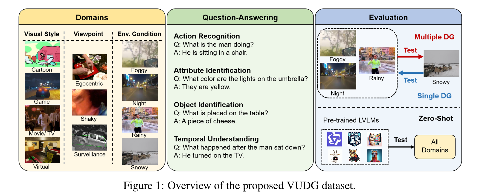
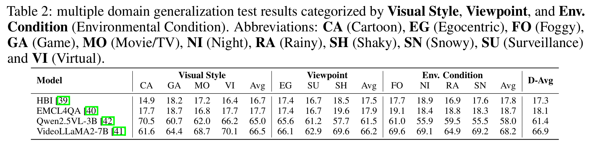
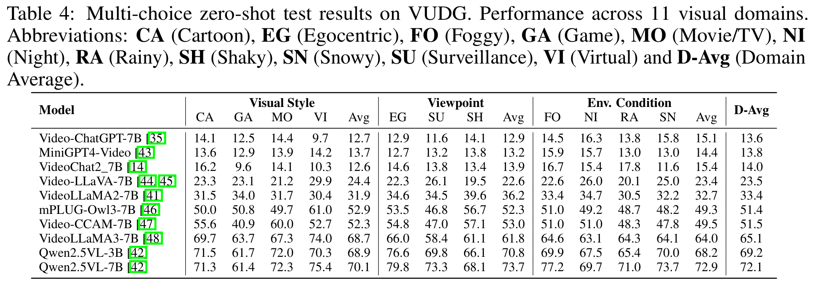

Ziyi Wang, Zhi Gao, Boxuan Yu, Zirui Dai, Yuxiang Song, Qingyuan Lu, Jin Chen, Xinxiao Wu
Beijing Institute of Technology
Shenzhen MSU-BIT University
Video understanding has made remarkable progress in recent years... (此处保留你原 Abstract，不再重复粘贴)
The training set comprises 6,337 video clips and 31,685 QA pairs...



@article{wang2025vudg,
title={VUDG: A Dataset for Video Understanding Domain Generalization},
author={Wang et al.},
year={2025}
}